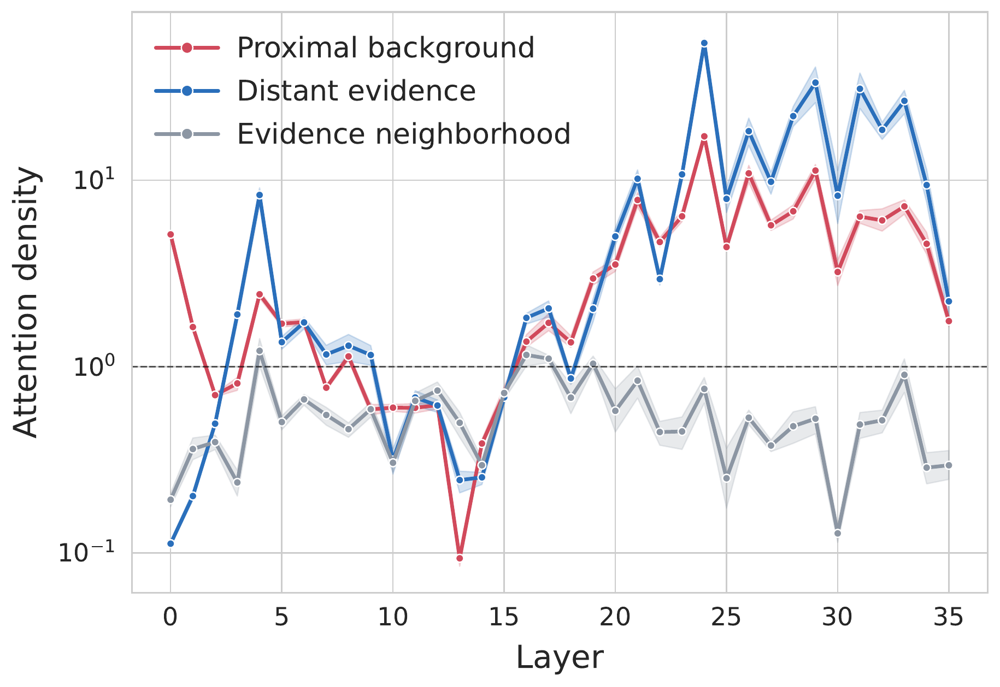
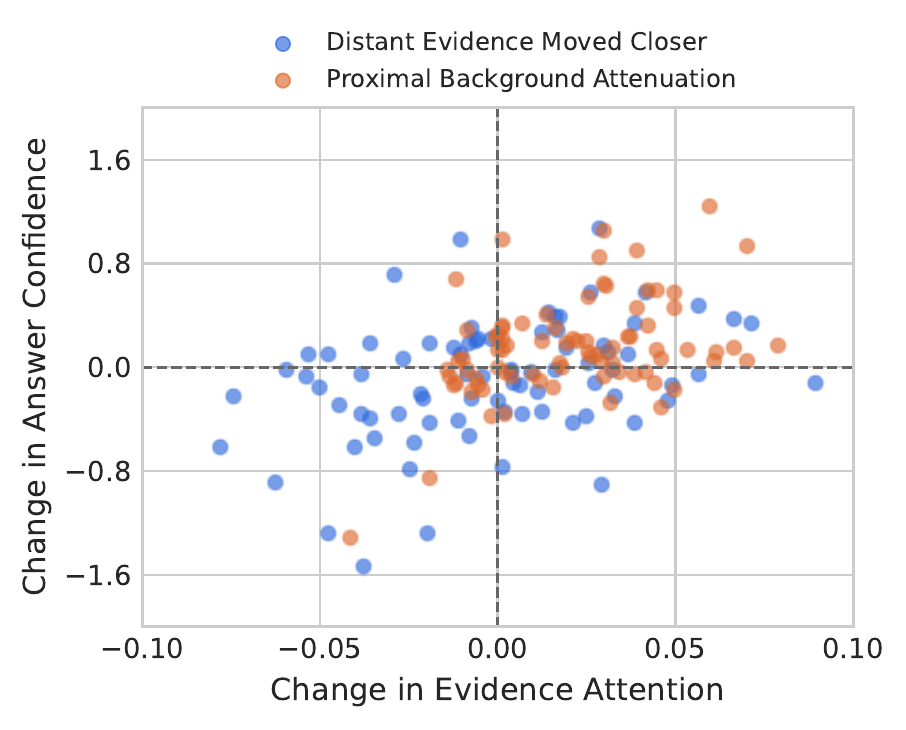
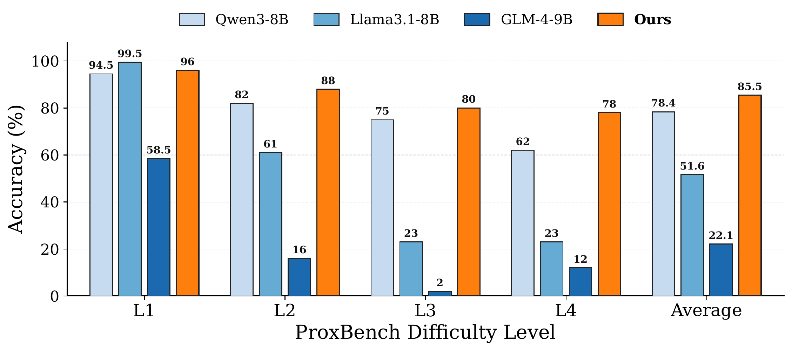

Style-matched
Similar syntax, but a different entity, topic, and answer relation.
Long-context relevance alignment
When Proximal Background Context Overshadows Distant Evidence
Long-context models may locate distant evidence yet still fail to use it. LYRA reshapes attention competition so relevant evidence remains distinguishable from abundant nearby background.
Long-context language models are commonly evaluated by whether they can retrieve evidence over long distances. We identify a complementary failure mode: distant evidence can be found, yet its signal is diluted by the cumulative competition of abundant, task-irrelevant context close to the query. We call this phenomenon the Proximity Trap.
We introduce LYRA, a t-distributed directional matching mechanism that reshapes query-key score differences before softmax normalization. LYRA preserves relevant evidence according to directional agreement rather than position. Experiments on LongBench-v2, RULER, LongBench, and the controlled ProxBench benchmark show consistent gains across context lengths, task categories, and increasingly confusable proximal interference.
The challenge is not only finding evidence at a distance. It is keeping that evidence visible while nearby tokens compete for the same finite attention mass.
In later layers, the model selectively concentrates on the distant evidence while ordinary tokens in the same neighborhood remain below uniform attention. However, proximal background also receives substantial attention. Its lower per-token weight accumulates across many tokens and dilutes the evidence signal.


Moving evidence closer produces mixed changes in evidence attention and answer confidence. In contrast, attenuating nearby background while keeping the evidence and token positions fixed shifts more examples toward higher evidence attention and often higher confidence.
Distant evidence can be underused because many individually weak proximal tokens collectively dominate attention competition.
Long-context heavY-tailed Relevance Alignment preserves distant yet relevant evidence without rewarding distance itself.
Normalize queries and keys, then measure their directional agreement.
Compress weak or misleading advantages and amplify strongly aligned matches.
Apply the usual mask, softmax, and value aggregation to the reshaped scores.
LYRA does not indiscriminately promote distant tokens. It favors evidence that remains directionally aligned with the query.
Only the query-key scoring stage changes; the rest of the attention pipeline remains intact.
The analytical additional computation stays below 0.04% from 8K to 128K context.
A controlled benchmark that fixes distant evidence while making nearby, irrelevant context progressively more confusable.
Similar syntax, but a different entity, topic, and answer relation.
Familiar entity and relation cues, with the value bound to another entity.
The same relation for other entities mixed with target-entity attributes.
Confusable subtypes, attributes, semantic roles, and value formats.
LYRA remains strong across controlled context lengths and under increasingly difficult proximal interference.
| Method | Venue | 8K | 16K | 32K | 64K | 128K | Avg. |
|---|---|---|---|---|---|---|---|
| FlexPrefill | ICLR '25 | 71.65 | 73.89 | 75.38 | 72.65 | 68.51 | 72.42 |
| XAttention | ICML '25 | 85.63 | 82.25 | 81.60 | 73.18 | 69.91 | 78.51 |
| ProxyAttn | ICLR '26 | 92.07 | 89.75 | 86.68 | 83.57 | 77.09 | 85.83 |
| S2O | ACL '26 | 85.80 | 82.73 | 80.34 | 73.95 | 69.97 | 78.56 |
| PBS-Attn | ICML '26 | 85.56 | 79.34 | 80.95 | 70.70 | 67.90 | 76.89 |
| LYRA | - | 96.33 | 94.19 | 93.14 | 85.39 | 77.56 | 89.32 |
LYRA achieves the highest accuracy at every evaluated length. It improves the average over the strongest comparator by 3.49 points, with the largest gain at 32K (+6.46).

Although Llama3.1-8B is slightly stronger at Level 1, LYRA leads at every harder level. At Level 4, LYRA reaches 78% accuracy - 16 points above the strongest evaluated base model - and exceeds the strongest average baseline by 7.1 points.